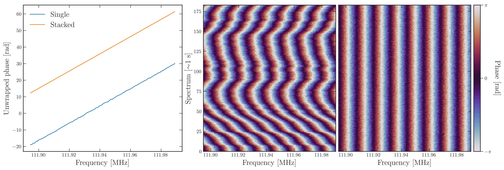
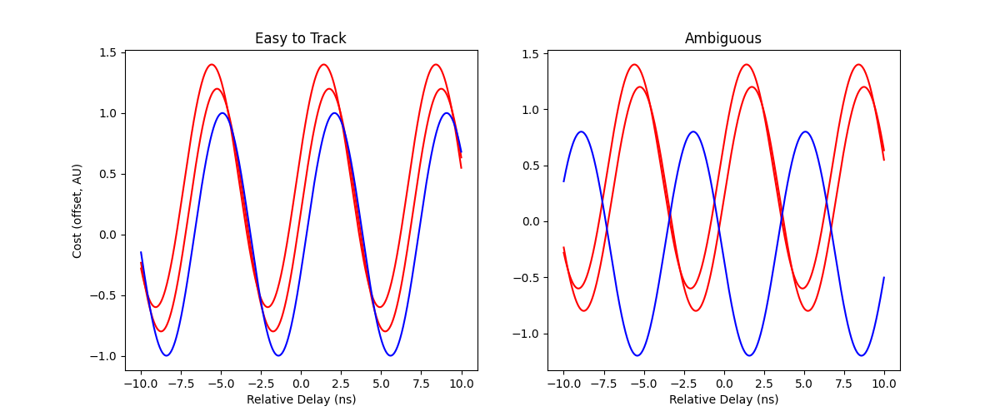
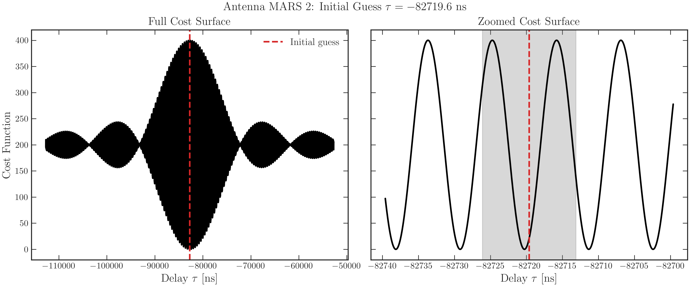
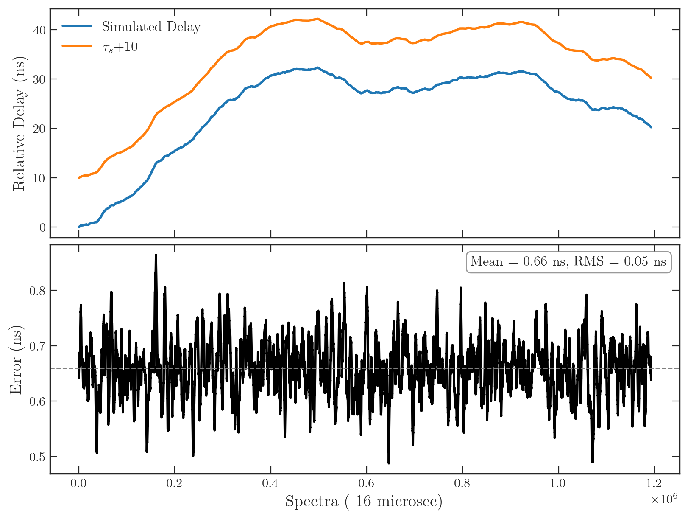

4. Fine Timing
The objective of fine timing is to determine the clock delay over time, to nanosecond level precision, for the duration of a satellite pulse.
4.1 Visibilities
The data we initially construct must be visibilities whose only source of delay are a result of the clock. We use upchannelized baseband data to ensure we sample the frequency domain sufficiently over the satellite signal's bandwidth. Typically, our frequency resolution is about 1 kHz. To remove geometric delays, we beamform onto the satellie souce, using the previously corrected UTC time (see Part 3). This ensures there is no residual phase accumulation from an incorrect beamform. Visibilities are then computed with an integration time between 0.5 and 1 seconds, as the clock drift not expected to exceed 1 ns for such timescales. All analysis is conducted jointly on all baselines, but for purposes of demonstration only one baseline is considered here. Ionospheric effects are not considered either.
Fundamentally, any delays between antenna timestreams in the time domain will manifest as linear phase ramps across the visibilities. Therefore, to correct for delays over the course of the pulse, we must determine the gradient of the phase ramp across frequency, for each time sample. Our upsampled data gives us access to more datapoints across frequency. The largest residual delay is of order 1 spectrum, i.e. 20 microseconds. This would cause a phase wrapping frequency of about 50 kHz. Therefore, with our channel resolution of 1 kHz, we do not have to worry about the signal causing the wrapping of phase across channels. When there is clear signal, we have phase noise of about 0.1 radians for our typical integration times, meaning we do not have to worry about unwrapping issues due to noise.
Below is an example of a visibility phase plot, next to its phase noise over time, for a single baseline of X km. Notice that there are some noisy and choppy sections. To ensure the fits are not compromised, and to ensure that we do not suffer noise that would cause unwrapping problems across phase, we must often cut our visibilities to approximately 2 minutes of the cleanest signal. The way this is done is to determine the noise on each timestamp using get_thermal_noise(), and to cut the pulse to the cleanest contiguous 2 minutes of signal. The cut times and channels are then recorded in cutting_finetiming.json, to facilitate re-running the pulse in the future.
4.2 A First Method
Naturally, in a perfect scenario, we could simply fit a phase ramp across frequenc for each time sample, extract the gradient, and go home early. Unfortunately, we do not have sufficient signal to noise for such a measurement to be sufficiently accurate, meaning we must dig a little deeper.
If we were, as suggested above, to simply unwrap phase over the signal channels, fitting a line, this would be equivalent to a downconverted fit. We lost all information about the carrier wave, i.e. the actual position of the signal in the frequency domain. The signal could be at 5 GHz, or at 350 kHz; unwrapping takes this information away. We therefore have no notion of 'phase delay', and instead only fir on 'group delay'. (For more information on this terminology, see Part 0). Such a ramp fit is an Ordinary Least Squares (OLS) problem, and the fit yields a group delay error of $$ \sigma_g = \frac{\sqrt{12},\sigma_{\phi}}{2\pi B\sqrt{N}}. $$ In our situation, with 0.1 rad phase noise and a carrier frequency of about 138 MHz, the group delay error is approximately 70 ns. This is too large of an uncertainty, yielding this method, demonstrably, insufficient for our desired level of accuracy.
4.3 An Improved Method
Consider a case where the visibility phases can first be aligned relative to a common reference, enabling the data to be averaged coherently in time. We would therefore average \(b\) spectra with \(N\) channels, all with the same, noisy phase ramp. The averaging would reduce the phase uncertainty by approximately \(\sqrt{b}\), leading to a corresponding improvement in the group-delay precision. The figure below illustrates the phase-alignment procedure applied to the simulated visibilities. After coherent averaging, the group-delay uncertainty is sufficiently reduced to localize the overall delay of the observation to within a small number of carrier peaks.

Our overall delay fitting strategy is therefore to split up the full time dependent group delay into an initial overall delay \(\tau_0\), and small scale time-dependent variations \(\tau_s(t)\), such that \(\tau(t) = \tau_0 + \tau_s(t)\). The \(\tau_s(t)\) serve both as the terms which cause the SNR boost, but also encode the actual clock drift with time. The small scale changes are by convention zero for the first visibility spectrum, such that \(\tau_0\) represents the delay at the start of the visibility data. In practice, the final timing solution \(\tau(t)\) is determined simultaneously using all baselines in the array, which also yields higher confidence in delays.
The small-scale time-dependent component \(\tau_s(t)\) is determined by a nonlinear least-squares fit to each time-sample spectrum. The visibility phases are expressed in complex form as \(e^{j2\pi \nu_0 \tau(t)}\), and a corresponding model of the form \(e^{i\theta(t)}\) is fitted using the Levenberg–Marquardt algorithm. The resulting cost function is proportional to \(1 - C(\tau)\), where \(C(\tau)\) denotes the normalized autocorrelation function for a flat narrowband spectrum (see Part 0).
Consequently, coherence maxima in the autocorrelation correspond to minima of the cost function, retaining the same sinc-modulated cosine structure derived previously. These minima define phase-delay solutions, which occur periodically with a spacing set by the carrier frequency. Variations in group delay manifest as a translation of the cost surface along the delay axis, such that the autocorrelation envelope is shifted by the corresponding clock offset between time samples. The fitting procedure therefore identifies the nearest local minimum relative to the initial guess and tracks its evolution over time. By sequentially updating the solution using the most recent estimate, the algorithm remains locked to a consistent branch of the phase-delay ambiguity and follows its temporal evolution throughout the visibility dataset. Under this formulation, the uncertainty in the phase-delay estimate is determined solely by the phase noise and the carrier frequency: $$ \sigma_p = \frac{\sigma_\phi}{2\pi\nu_0}. $$ For our values, this value is on the order of 0.1 ns.
4.4 Peak Ambiguities
There are, however, some constraints to peak tracking. First, the cost surface must be well-behaved for the fitter to reliably pick the nearest cost minimum. Near the sinc modulation maximum, the cost function looks like a flat sinusoid, and therefore yields reliable fitting. Therefore, when initializing a fit, we make a rough guess using linear least squares, to place our tracking within the reliable section of the cost surface. This is the reason we do an initial rough guess with about 10 time samples to get guess taus.
Secondly, the fitting must be able to unambiguously resolve \(2\pi\) ambiguities. If the clock drifts by half of the carrier wave period, which corresponds to a phase shift of \(\pi\), the cost surface does not encode anything about which direction the drift went, and therefore the fitter cannot differentiate between a drift forward by \(\pi\) or backward by \(\pi\). This can lead to a misinterpreted relationship between phase delay and the underlying group delay, as shown in the left plot below. We do not expect the clock to drift by more than a nanosecond, so this type of ambiguity would be arise as the consequence of an unlikely event in our setup.

To elaborate on the figure above, the first three colors represent well-behaved delay changes across time-samples, which unambiguously map phase delay to group delay evolution. Red represents an ambiguous case. The left plot shows the cost structure for various time-samples, with a shifting envelope corresponding to delay drift. The ambiguous case arises when the drift is \(\pi\) radians or more, as the fitter may select either of the equidistant forward or backward minima. The right plot shows what the cost surfaces would yield as phase ramps and therefore group delay. The red envelope could yield two vastly different ramps, as the fitter cannot distinguish between the two phase delay solutions.
Once \(\tau(t)\) is determined for the whole pulse, we save it into a h5 file called '/batchX/fine_timing/timing_solution.py'. Since we have several pulses which we may want to evaluate independently, we save each pulse according to the file name it corresponds to. Each dataset then has shape (ntimes, nant-1) to store the solution. Moreover, we save errors on the fit overall, and for each timestamp also. For a good pulse, we expect net group delay errors of about 4 ns.
IMPORTANT: there are two different types of fit here: fitting on the cost carrier peak and fitting on the averaged phase ramp. One will actually give you a carrier peak (perhaps the wrong one) while the other will give you something close, with a better uncertainty on its value. They signify and represent different stuff.
The final fit, once you do the time average and normal equation fit gives us the red line. The correct carrier peak is right next to it, and the fit uncertainties are right next to it.

Here is also the full with-time plot, for a simulation of about 3 minutes.
